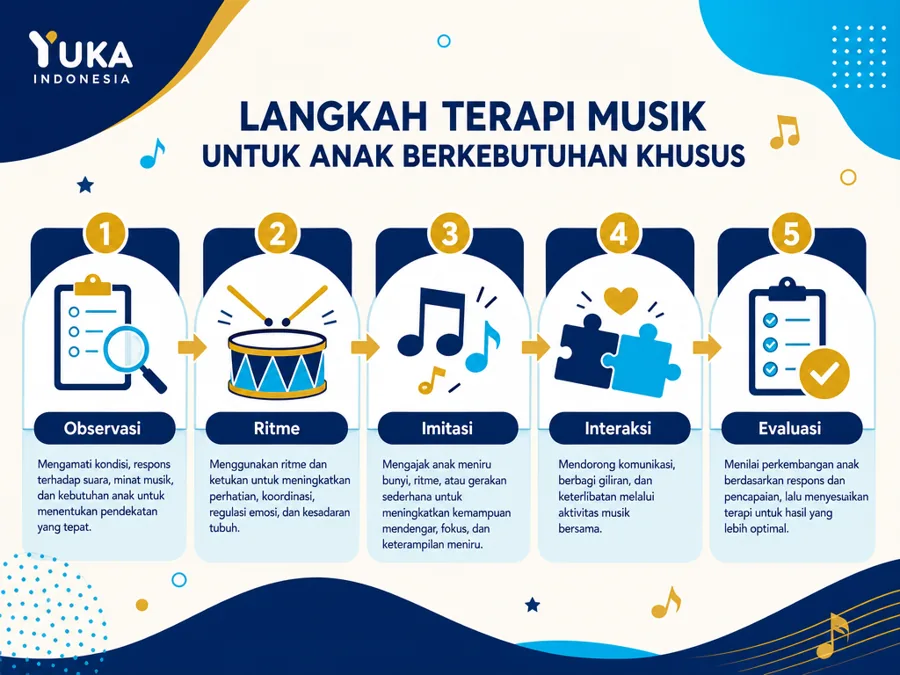
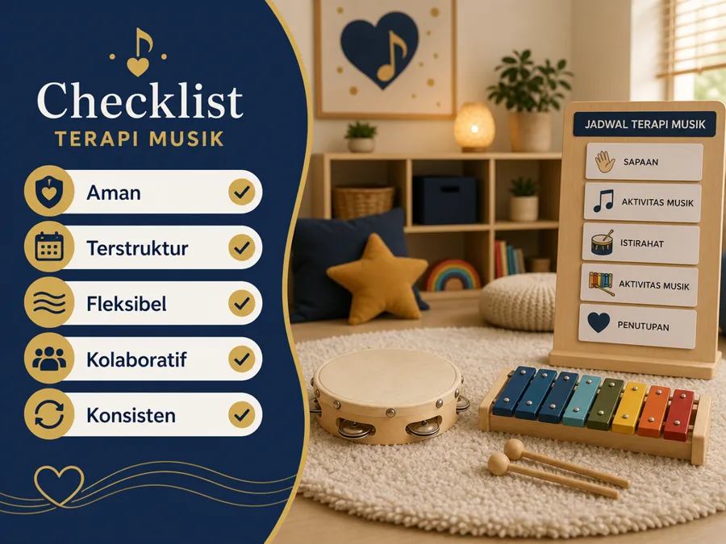

Terapi musik anak berkebutuhan khusus dapat menjadi jembatan regulasi, komunikasi, dan interaksi jika dilakukan dengan tujuan yang jelas, volume aman, dan penuh penghargaan terhadap kebutuhan anak. Bagi banyak anak ABK, musik terasa lebih mudah diproses daripada instruksi verbal yang panjang, sehingga ritme dan lagu dapat memberi struktur yang menenangkan.
Di lingkungan Yayasan Ukhuwah Kaffah Amanatullah (YUKA), prinsip ini penting karena setiap anak memiliki profil sensorik, komunikasi, dan emosi yang berbeda. Melalui pendekatan pendidikan inklusi, YUKA mendampingi anak berkebutuhan khusus dengan cara yang amanah dan hangat, termasuk memanfaatkan media musik secara terstruktur.
Artikel ini membahas apa itu terapi musik untuk ABK, manfaat yang realistis, langkah membuat aktivitas yang terstruktur, contoh aktivitas di rumah dan kelas, batas aman, kolaborasi orang tua dan terapis, cara evaluasi, serta FAQ praktis. Panduan ini kami susun untuk membantu orang tua, guru, dan pendamping menerapkan musik sebagai alat bantu yang aman dan bermakna.
Daftar Isi
- Apa Itu Terapi Musik untuk ABK?
- Manfaat yang Realistis untuk Anak dan Keluarga
- Langkah Membuat Aktivitas Musik yang Terstruktur
- Contoh Aktivitas Musik di Rumah dan Kelas
- Batas Aman dan Hal yang Perlu Dihindari
- Kolaborasi Orang Tua, Guru, dan Terapis
- Cara Mengevaluasi Perkembangan Anak
- FAQ Seputar Terapi Musik ABK
Apa Itu Terapi Musik untuk ABK?
Terapi musik anak berkebutuhan khusus adalah pendekatan pendampingan yang menggunakan unsur musik secara sengaja, bukan sekadar memutar lagu agar suasana lebih ramai. Unsur yang dipakai bisa berupa ritme, tempo, melodi, gerakan tubuh, tepukan tangan, instrumen sederhana, atau lagu dengan pola berulang. Tujuannya menyesuaikan kebutuhan anak, misalnya melatih perhatian, menunggu giliran, menirukan bunyi, mengelola emosi, atau membangun interaksi sosial.
Bagi sebagian anak ABK, musik terasa lebih mudah diproses daripada instruksi verbal panjang. Ketukan yang berulang memberi struktur. Lagu pendek membantu anak mengingat urutan. Instrumen sederhana memberi kesempatan anak memilih, merespons, dan mengekspresikan diri tanpa harus selalu berbicara panjang.
Namun, terapi musik bukan pengganti asesmen, terapi wicara, terapi okupasi, pendidikan khusus, atau dukungan medis ketika dibutuhkan. Ia lebih tepat dipahami sebagai pendekatan pendamping yang bisa memperkaya proses belajar anak. Di lingkungan YUKA Indonesia, prinsip seperti ini penting karena setiap anak memiliki profil sensorik, komunikasi, dan emosi yang berbeda.
Catatan Penting
Terapi musik bukan obat penyembuh autisme, ADHD, atau kondisi perkembangan lain. Ia adalah pendekatan pendamping yang membantu anak berlatih komunikasi, fokus, regulasi, dan interaksi jika dilakukan secara terstruktur, aman, dan konsisten.
Manfaat yang Realistis untuk Anak dan Keluarga
Manfaat pertama adalah regulasi emosi. Anak yang mudah cemas, gelisah, atau sulit berpindah aktivitas sering terbantu oleh lagu transisi yang sama setiap hari. Misalnya lagu pendek sebelum belajar, lagu selesai bermain, atau ritme pelan untuk menenangkan tubuh. Pola yang konsisten membuat anak lebih mudah memprediksi apa yang akan terjadi.
Manfaat kedua adalah komunikasi. Musik memberi ruang untuk latihan bergiliran: guru memainkan drum, anak menirukan; orang tua menyanyi satu baris, anak melanjutkan kata terakhir; atau anak memilih gambar instrumen yang ingin dimainkan. Aktivitas kecil seperti ini dapat membuka kesempatan komunikasi verbal maupun nonverbal.
Manfaat ketiga adalah perhatian bersama. Banyak anak membutuhkan latihan untuk melihat, mendengar, menunggu, lalu merespons. Ketukan ritme sederhana bisa menjadi jembatan. Anak tidak diminta langsung menjawab pertanyaan sulit, tetapi diajak masuk ke pola interaksi yang menyenangkan.
Manfaat keempat adalah motorik dan koordinasi. Menepuk, menggoyangkan shaker, mengetuk drum, atau mengikuti gerakan lagu membantu anak menyadari tubuhnya. Untuk sebagian anak, aktivitas ini juga mendukung latihan motorik kasar dan halus secara lebih natural.
Langkah Membuat Aktivitas Musik yang Terstruktur
Langkah pertama adalah observasi. Catat suara apa yang disukai anak, suara apa yang membuat anak tidak nyaman, berapa lama anak mampu mengikuti aktivitas, dan apakah anak lebih responsif terhadap lagu, ritme, atau gerakan. Observasi ini mencegah kita memaksakan aktivitas yang terlalu ramai.
Langkah kedua adalah menentukan tujuan kecil. Jangan mulai dengan target besar seperti anak harus langsung bernyanyi. Mulailah dari tujuan sederhana: anak mau duduk dua menit, anak memilih satu instrumen, anak menunggu giliran satu kali, atau anak menirukan satu ketukan.
Langkah ketiga adalah membuat pola sesi. Contohnya salam pembuka, aktivitas ritme, permainan imitasi, lagu pilihan anak, lalu penutup. Struktur seperti ini membuat kegiatan mudah diprediksi. Anak yang membutuhkan rutinitas biasanya lebih nyaman jika tahu kapan aktivitas dimulai dan selesai.
Langkah keempat adalah evaluasi. Setelah sesi, tulis respons anak. Apakah anak tersenyum, menutup telinga, meminta ulang, menolak, atau mampu mengikuti instruksi lebih baik? Data sederhana ini membantu orang tua dan pendamping menyesuaikan kegiatan berikutnya.

Contoh Aktivitas Musik di Rumah dan Kelas
Untuk latihan fokus, gunakan tepuk pola. Orang tua menepuk dua kali, anak menirukan. Jika anak sudah mampu, tambah variasi pelan dan cepat. Aktivitas ini sederhana tetapi melatih perhatian, memori kerja, imitasi, dan kontrol impuls.
Untuk latihan bahasa, gunakan lagu dengan jeda. Misalnya orang tua menyanyi, lalu berhenti di kata terakhir agar anak melengkapi. Jika anak belum verbal, anak bisa menunjuk kartu gambar atau mengeluarkan bunyi. Tujuannya bukan memaksa bicara, tetapi memberi ruang anak mengambil giliran komunikasi.
Untuk regulasi, buat playlist pendek dengan tempo menurun. Mulai dari lagu yang cukup aktif, lalu berpindah ke ritme lebih pelan. Gunakan suara lembut dan volume rendah. Anak yang sensitif suara perlu kontrol volume dan pilihan untuk berhenti.
Untuk interaksi sosial di kelas, gunakan permainan giliran instrumen. Satu anak memainkan shaker, anak lain menunggu, lalu berganti. Guru dapat memberi visual schedule agar anak paham urutan. Aktivitas ini melatih sabar, mengikuti aturan, dan menghargai teman.
Di rumah, orang tua bisa membuat sesi mikro selama 10-15 menit setelah anak dalam kondisi cukup tenang. Mulailah dengan salam pembuka yang sama, pilih satu lagu transisi, lalu gunakan satu instrumen sederhana seperti shaker atau tamborin kecil. Jika anak hanya mau mendengar tanpa memegang alat, itu tetap respons yang valid. Catat perubahan kecil: anak menoleh, menunggu giliran, mengikuti satu ketukan, atau lebih cepat tenang setelah lagu selesai.
Saat memilih terapis musik atau pendamping aktivitas musik, prioritaskan orang yang mau melakukan asesmen sensorik sederhana sebelum sesi. Terapis yang baik tidak langsung memaksa anak bernyanyi atau memainkan alat tertentu. Ia akan menanyakan pemicu suara, durasi fokus, cara anak berkomunikasi, dan target yang ingin dicapai keluarga. Dengan begitu, terapi musik anak berkebutuhan khusus tidak berubah menjadi aktivitas ramai tanpa arah, tetapi menjadi latihan yang terukur, aman, dan menghargai ritme anak.
Batas Aman dan Hal yang Perlu Dihindari
Terapi musik harus ramah sensorik. Hindari volume terlalu keras, instrumen yang mengejutkan, atau perubahan tempo mendadak jika anak mudah overload. Tanda anak tidak nyaman bisa berupa menutup telinga, menjauh, menangis, tertawa berlebihan karena tegang, atau menjadi agresif.
Jangan memakai musik sebagai hukuman atau alat memaksa. Jika anak menolak, cari tahu penyebabnya. Mungkin lagu terlalu cepat, ruangan terlalu ramai, instruksi terlalu panjang, atau anak sedang lelah. Pendamping yang baik menghormati sinyal anak.
Perhatikan juga keamanan alat. Pilih instrumen yang tidak tajam, tidak mudah pecah, dan ukurannya sesuai usia. Untuk anak yang masih sering memasukkan benda ke mulut, hindari alat kecil yang berisiko tertelan.
Sumber seperti meta-analisis di Frontiers dan artikel ilmiah di PMC menunjukkan potensi manfaat musik untuk komunikasi dan keterampilan sosial pada anak dengan spektrum autisme, tetapi efeknya tetap perlu dilihat secara individual. Karena itu, keluarga sebaiknya menggabungkan observasi harian dengan arahan profesional.
Kapan Sesi Dihentikan Sementara
Hentikan sesi jika anak menutup telinga terus-menerus, menangis, panik, agresif, atau terlihat kelelahan. Turunkan volume, kurangi stimulus, dan kembali ke aktivitas regulasi yang lebih tenang sebelum mencoba lagi di lain waktu.

Kolaborasi Orang Tua, Guru, dan Terapis
Program musik yang baik tidak berdiri sendiri. Orang tua mengetahui kebiasaan anak di rumah. Guru memahami perilaku anak di kelas. Terapis memahami target perkembangan. Ketiganya perlu berbagi catatan agar aktivitas musik mendukung tujuan yang sama.
Contohnya, jika target terapi wicara adalah menambah inisiasi komunikasi, aktivitas musik bisa memberi kesempatan anak memilih lagu atau meminta instrumen. Jika target okupasi adalah regulasi sensorik, aktivitas musik bisa diatur dengan tempo pelan dan gerakan terstruktur. Pendekatan sensori integrasi juga dapat dipadukan agar stimulasi tetap nyaman bagi anak.
Di lembaga sosial dan pendidikan inklusi seperti YUKA Indonesia, kolaborasi juga berarti menghargai martabat anak. Anak bukan objek latihan, melainkan pribadi yang perlu didengar. Musik menjadi media untuk membuka koneksi, bukan sekadar metode agar anak patuh.
Cara Mengevaluasi Perkembangan Anak
Evaluasi tidak harus rumit. Buat tabel kecil berisi tanggal, aktivitas, durasi, respons anak, dan catatan. Misalnya anak mampu mengikuti dua kali giliran, mulai menatap instrumen, lebih tenang setelah lagu penutup, atau masih menolak suara tertentu.
Gunakan ukuran yang realistis. Kemajuan bisa berupa anak lebih cepat tenang, lebih berani memilih, lebih lama duduk, atau lebih sering merespons. Untuk sebagian anak, perubahan kecil yang konsisten jauh lebih bermakna daripada target besar yang dipaksakan.
Jika dalam beberapa minggu anak selalu tampak stres, kegiatan perlu diubah. Bisa jadi musik bukan media utama yang cocok saat itu, atau pendekatannya perlu dibuat lebih lembut. Fleksibilitas adalah bagian dari pendampingan yang penuh kasih.
Dukungan YUKA untuk Anak Berkebutuhan Khusus
Melalui pendidikan inklusi dan pendampingan terpadu, YUKA membantu anak berkebutuhan khusus berkembang sesuai potensinya. Jika Anda ingin berkonsultasi tentang aktivitas musik atau program pendampingan lainnya, tim YUKA siap membantu dengan pendekatan yang hangat dan menghargai kebutuhan setiap anak.
FAQ Seputar Terapi Musik ABK
1. Apa itu terapi musik anak berkebutuhan khusus?
Terapi musik anak berkebutuhan khusus adalah penggunaan musik, ritme, lagu, gerak, dan instrumen secara terarah untuk membantu tujuan perkembangan seperti komunikasi, regulasi emosi, perhatian, interaksi sosial, dan koordinasi motorik.
2. Apakah terapi musik bisa menyembuhkan autisme atau ADHD?
Tidak. Terapi musik bukan obat penyembuh autisme, ADHD, atau kondisi perkembangan lain. Terapi musik dapat menjadi pendamping untuk membantu anak berlatih komunikasi, fokus, regulasi, dan interaksi jika dilakukan secara terstruktur.
3. Siapa yang boleh memberikan terapi musik untuk ABK?
Idealnya program dirancang oleh terapis musik atau profesional pendidikan khusus yang memahami kebutuhan anak. Orang tua dan guru dapat melakukan aktivitas musik sederhana di rumah atau kelas dengan arahan yang aman.
4. Berapa lama sesi terapi musik untuk anak?
Durasi tergantung usia dan toleransi anak. Banyak anak lebih cocok memulai dari 10 sampai 20 menit, lalu ditingkatkan bertahap. Yang penting bukan lamanya sesi, tetapi konsistensi, kenyamanan, dan tujuan yang jelas.
5. Apa contoh aktivitas musik yang aman di rumah?
Contohnya tepuk ritme sederhana, menyanyi bergiliran, menirukan bunyi, memainkan shaker lembut, memilih lagu untuk menamai emosi, atau mengikuti instruksi singkat lewat lagu.
6. Kapan terapi musik harus dihentikan sementara?
Hentikan jika anak menutup telinga terus-menerus, menangis, panik, agresif, atau terlihat kelelahan. Turunkan volume, kurangi stimulus, dan kembali ke aktivitas regulasi yang lebih tenang.
7. Apakah semua anak ABK cocok dengan terapi musik?
Tidak selalu. Sebagian anak sangat sensitif terhadap suara tertentu. Karena itu, terapi musik perlu observasi awal, pilihan suara yang fleksibel, dan kerja sama dengan orang tua, guru, serta terapis lain.
Baca Juga Artikel Terkait:
Sumber Resmi & Referensi Authoritative
Konten artikel ini diperkuat dengan referensi dari lembaga resmi pemerintah dan publikasi ilmiah:
- Frontiers in Psychology: Systematic Review Terapi Musik (2024) frontiersin.org
- PMC: Meta-analysis Music Therapy for Autism pmc.ncbi.nlm.nih.gov
- PMC: Review tentang Intervensi Musik pada Anak pmc.ncbi.nlm.nih.gov
- Kemenkes Ayo Sehat: Kumpulan Link Penting untuk Anak Disabilitas ayosehat.kemkes.go.id
Disclaimer Medis & Pendidikan: Artikel ini bersifat edukasi umum dan bukan pengganti konsultasi profesional. Untuk diagnosis, asesmen, atau penanganan anak berkebutuhan khusus, silakan konsultasikan langsung dengan dokter anak, psikiater anak, psikolog perkembangan, terapis okupasi, atau tenaga ahli pendidikan khusus yang berlisensi. YUKA Indonesia mendukung pendekatan multidisiplin dan tidak menggantikan peran tenaga medis maupun terapis profesional.